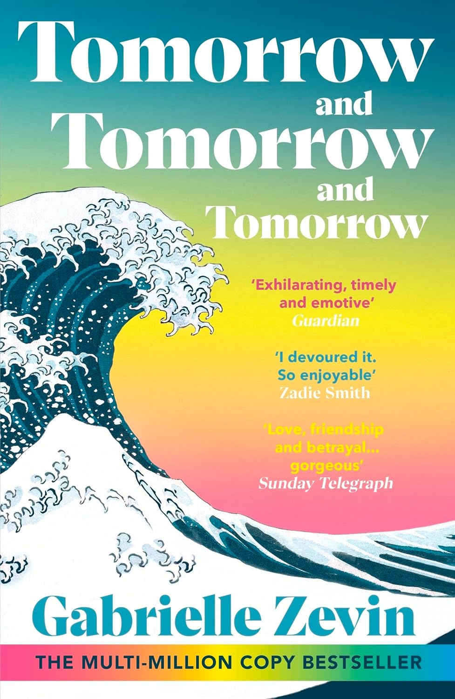

⣏⢯⡽⢭⣛⣭⠻⣭⣛⣭⠻⣭⠻⡭⢯⠽⡭⢯⡝⣫⣝⣫⡝⢯⡝⣫⠽⣭⢯⡽⣭⢏⡯⡽⢭⠯⡽⢭⢯⡹⣭⢫⡝⡭⢏⡽⡭⢯⡝⣯⢯⡽⣹⠮⣝⡭⢯⣹⣙⢮⡝⣣⢯⢽⣩⠷⣭⣛⡼⢭⣛⡼⣫⠽⣭⢯⡝⣯⠽⣭⢻⡼⣍⠯⣝⡭⢏⡳⣭⢏⡷⡭⢯⡽⣩⢯⢽⣩⢯⢽⣩⢯⠽⣭⠯⡽⡭⢯⡽⢭⢯⠽⣭⠯⣝⢮⡝⣮⡝⣣⢏⡷⡹⢮⡝⡭⣏⡽⡹⢮⡝⣝⢮⣝⣣⠯⣝⢮⡽⣍⢯⡽⢭⢯⡽⣭⢻⡝⣯⢏⡿⣭⢯⡝
⣮⢳⡜⢣⡚⡴⢋⠖⡌⣖⠻⡜⣭⠳⣍⡞⣱⢣⠞⡵⢊⡵⣚⡱⢎⠵⣋⢖⢣⠞⡸⢎⠵⣙⢎⢳⡉⢏⠎⡵⣉⠳⣜⡙⣎⠶⣙⠧⣙⣎⠳⣞⢥⢻⡜⣜⣣⠳⣜⠮⣱⡙⣎⢮⠱⣏⢖⡱⢎⡳⡍⢞⡵⢛⡜⢮⡙⣎⢻⡜⢣⣓⠮⡹⡜⡼⣩⢓⢧⢋⠶⣙⠳⡜⢣⢏⢎⠵⣊⠷⡸⡩⢞⣡⢛⠵⣙⠧⣚⢭⡚⡝⢦⡛⡬⣓⠮⣱⢚⢥⣋⠶⡙⣇⡚⠵⣊⠶⣉⠷⡸⡩⠖⣎⠵⢋⠞⡜⡲⡍⠞⡼⢩⢖⡹⡜⣣⢛⡬⢛⢖⠩⢶⡹
⢮⡳⣎⠧⣽⡸⣍⣞⡱⢎⣳⡹⢆⡻⢴⡙⢦⣋⡞⣭⠳⣎⡵⡹⢎⡳⡭⣎⢧⢏⡳⣭⢚⡭⢎⡧⡝⡮⣝⠶⣩⢳⣌⡳⢼⣙⢮⡝⡶⣭⢳⡭⢞⣣⢞⡼⣱⣛⣬⢳⣥⠻⣜⡎⣷⢚⣎⢷⣹⢲⡹⣎⡼⡳⣞⢧⡻⣜⢧⣛⢧⡻⣜⡳⣝⢧⡽⢭⣎⡟⣮⡝⣧⣛⠷⣎⡞⣧⢻⣜⡳⣝⣣⢗⡯⣞⢵⡻⣜⢶⡹⣎⢷⣙⠶⣭⣛⠖⣯⠶⡭⣞⢵⣣⠯⣝⡎⡷⢭⡞⣱⢭⣛⡜⣮⢛⡼⢳⡱⣭⢻⣜⡳⢮⡵⣹⢲⢯⡜⣯⢎⡟⣧⣛
⣳⠽⣌⠛⣴⣛⡼⣲⢝⣫⢶⣹⢫⡵⢫⡝⢲⡍⡞⣥⠻⣜⡱⢏⡯⢵⠳⡭⢞⡎⢷⣱⢫⢞⡳⡼⣍⠷⢮⣙⠧⣏⢶⡹⣓⢮⡓⣾⢱⡫⡗⢾⡹⣜⢮⢳⠧⢯⣜⡳⢎⡿⡜⡽⡒⣏⠞⣎⢧⢏⡷⡹⡞⣵⢫⡞⣵⢫⡞⡽⣎⠷⣭⢳⡝⡾⣜⡳⢮⡝⣶⡹⢶⣭⢻⡼⣹⢎⡷⢎⡷⣙⢮⡝⣶⡹⣎⢷⡹⣎⢷⡹⣎⣭⣛⢶⣩⢟⡲⢏⡷⣹⢺⣜⡳⣭⢞⣭⢳⡞⣵⢫⡜⣧⢳⢫⢞⢧⣛⠶⣋⡶⣹⢳⡺⢵⣫⢞⡽⣜⣫⢞⡵⣭
⢧⣛⢆⠻⣴⢫⠖⠙⠊⠗⢋⠒⠋⢞⣧⢻⡱⣚⠵⣎⢳⢭⣚⢭⡚⣥⡛⣝⢮⣹⢚⡴⢫⢞⡱⢳⢎⡽⢳⡜⡳⡜⢮⡱⡝⢦⣛⡴⣫⢵⡫⢷⡹⣎⡟⣬⡛⢦⢧⡙⢧⢞⡹⢲⡹⣜⠺⡜⢦⡛⣜⡳⣝⢮⡳⣝⢮⡳⣝⢳⡎⡿⡜⣧⢻⠵⣫⠝⣧⢛⢶⣹⠳⣎⠷⣍⠷⣋⢾⡹⢶⡹⢞⡼⣣⢟⡼⣣⠟⡼⢣⢟⡼⢲⡹⢎⠶⣫⢝⡹⢞⡱⢏⢶⡹⢖⡏⢮⠳⣞⡱⢏⠾⣱⢋⠯⣞⢣⢯⡹⢧⡛⡵⢫⡵⢫⢖⢯⡚⡵⣋⠾⣱⢞
⣏⢾⡩⢞⡼⣋⠆⠀⣲⠚⣡⣿⠀⣸⢎⣗⡳⣭⢞⡱⣏⠾⣜⡲⣝⡲⣝⡺⡼⢥⡻⣜⢯⡺⢵⡫⣞⡜⢧⠞⣵⣩⢳⢣⣛⢶⣩⠶⠙⠎⠓⠉⠱⠉⠐⠀⢀⣀⡀⠈⠈⠈⠓⠣⡽⣌⠷⣙⢧⡻⣜⡳⣝⢮⢳⣎⢷⡹⣎⢷⣚⡵⣻⡜⢧⡻⣥⢻⡴⣫⢖⢧⡛⣬⠳⣌⠷⣩⠖⣥⠳⣜⣣⢟⡵⣫⢖⣱⣎⣱⢏⣞⡬⢣⡝⣎⢳⡱⢪⡕⢮⡱⣋⠶⣩⠞⣜⢣⡛⡴⣙⢎⡳⡱⢎⡳⣌⠳⢦⣙⢦⡹⣜⡱⢎⣓⢮⢲⡙⢶⡁⡞⣥⢯
⢎⣳⠐⢎⡳⣝⡂⠀⣽⠃⢰⣿⠀⣸⢏⡶⠱⣎⢞⡱⡭⢞⣬⢓⡮⢵⡣⡝⡞⣥⠻⣜⡲⣝⡣⠷⡜⣎⢏⡾⡱⢎⠳⠋⠈⠀⢀⣀⣤⣴⣤⣶⣤⣴⡌⢻⣿⡾⡅⠀⠁⠂⡀⠀⠀⠙⠚⠉⠶⡹⢎⡵⣫⢞⡱⢎⣎⠷⣩⢶⡙⣶⡱⣛⢎⡷⢭⡳⢮⡵⣫⢖⡻⣖⡻⣼⡹⢧⡞⣥⡟⣮⢗⡯⣞⣵⣾⣿⣿⣯⣿⡿⣞⢳⡜⣎⢧⡝⣣⠞⣥⢳⡝⣎⢷⡹⣎⠷⣭⢳⢭⡞⣵⡹⢧⡳⡭⢏⡷⢎⣳⢳⣜⡳⣝⡞⢮⡳⡝⣧⠳⣜⢮⣳
⢏⣮⠣⣜⡳⢞⡄⠀⣽⣂⣄⣻⠅⢸⣏⡼⡱⢎⡝⡶⡹⢎⡶⡹⣜⣣⢳⡹⣜⢮⡳⡼⣱⢎⡵⡻⣜⢮⠳⠎⠁⢀⣠⣤⣶⣾⣿⣿⣫⣟⣼⣻⣟⣻⣿⣤⡀⠀⠁⣀⠀⠀⠀⠀⠀⠒⢶⣠⢄⡀⠙⠪⣕⣫⢞⡽⢬⡳⡱⣎⡳⢶⡹⣜⢮⡝⣮⢳⠧⣏⢷⣫⠷⣭⢳⣇⣟⣣⢟⣵⣫⡽⣎⣷⣽⣿⣿⣿⣿⣿⣽⢳⣩⢗⡾⣹⢦⢫⡵⢻⡜⣧⢞⡼⢮⠵⣎⢷⡹⢞⣎⠷⣎⡽⣣⢟⡱⢯⡜⣯⢞⡳⣎⢷⡹⣞⢧⣻⢹⣎⢷⣚⡧⢯
⣚⢶⡹⢴⢫⡻⡄⠀⢿⣃⢘⣯⡃⠘⣖⡳⢩⣎⡝⠶⣍⢷⡸⢇⡳⣎⢷⡹⢎⡳⣳⣙⢧⣋⠶⡙⠘⠈⢀⣤⣾⡿⣿⣟⡿⣟⣳⣿⣷⣾⣿⣷⣿⣿⣿⡿⠧⠀⠀⠉⠀⠀⣤⣖⠀⠀⠈⠁⠸⣟⠶⢀⠈⠐⠋⢼⣣⠷⣹⢲⡍⣷⡹⢎⡳⡽⣌⢿⡾⣽⣾⣵⣻⣼⣳⣞⣮⡵⣯⡶⣧⣷⣿⣿⣿⣿⣿⣾⣽⣿⣿⣷⣻⣾⣴⢋⡞⣥⢛⡧⣛⡴⢫⡞⣭⣛⣬⢳⣭⠻⣼⡹⢮⡵⣫⢞⡹⢧⡝⣶⣋⢷⡹⣎⢷⡹⣎⡗⣯⢞⣧⢻⡜⣯
⡝⡶⣹⢎⡳⡝⡅⠀⣿⡅⠈⣿⡅⠈⢮⡝⣡⢎⡼⣹⡜⢮⠳⣩⣳⣟⡾⣽⣯⢷⣳⡽⠚⠈⠀⣀⣴⣾⣿⣿⣳⣿⣽⣿⣻⢿⣯⣿⣿⣿⡟⠿⠉⠉⠈⠀⣀⢠⠐⠂⠀⠰⠌⠻⣿⣆⠀⠀⠀⠀⡀⠘⢷⡄⠀⠀⠈⢽⣣⢯⡜⢦⡝⣫⢵⣛⣬⣛⢿⣻⣽⣿⣿⣿⣟⣿⣿⣿⣿⣿⣿⣿⡿⣿⣿⣿⣿⣻⣿⣿⣟⣿⣿⣟⣾⣿⣼⣶⣯⣶⣳⣼⣳⣙⢦⢳⢎⡗⣎⢟⣲⡹⢧⡳⣝⢮⡝⣧⣛⢶⡹⣎⢷⡹⣎⢷⣹⢺⡵⣋⡞⣧⢻⣜
⠘⠅⡁⢨⠀⡝⡆⠀⣽⡄⠀⣿⡄⠀⢳⡚⢥⢎⡳⣱⣚⣧⡻⣵⢫⢾⣽⣳⢏⠟⠃⠁⣠⣴⣿⣿⢿⣫⢿⣞⣿⡙⠊⢻⣿⢿⡿⢿⣯⡁⠀⠀⠀⠀⠀⠀⠛⠻⠎⠠⡔⠀⡄⠀⠹⠙⠀⠀⠀⠀⠃⡄⠀⠀⠀⠀⠀⢠⣛⢶⡙⣦⠝⣎⣳⢹⡲⣭⢲⡱⣏⡝⣷⣿⣻⣟⣾⣯⣟⣿⣽⡿⣿⣿⣿⡿⣿⣿⣻⣟⣿⣯⣷⣿⣻⣾⣽⢾⣷⣻⣽⢳⡟⡝⣎⢏⡮⣝⢮⡹⢖⡹⢧⡝⣎⡳⢞⡱⣎⢷⣙⢮⡳⣝⢮⡳⣭⢳⡞⡵⡻⣜⡳⢮
⢀⠶⡉⠀⠀⡸⡅⠀⣾⡇⠀⠋⠀⠀⠧⣝⠎⡾⣝⡳⣏⣞⣳⡽⢯⣟⢮⠧⠉⢀⣴⣿⣿⣿⣻⣾⣟⣿⢟⡿⠈⠁⠀⠙⠀⠀⠀⠈⠙⠀⠀⠀⠀⠁⠠⠄⠀⠀⠐⢷⣘⡀⠁⢂⠀⠀⠀⠀⢹⡄⠀⠘⠢⠴⢤⡄⠀⠈⠝⣮⢳⡜⣫⡜⣥⠳⡝⣮⢳⡝⣾⢸⣷⣻⣽⣟⡿⣽⣿⣻⣿⢿⣿⣟⣿⡿⣿⢿⣿⢿⣿⣻⣽⡾⣟⣯⢿⡻⢞⡳⣌⡳⢞⡱⣎⢏⡶⣹⠲⣭⢫⡝⣎⡳⡭⢽⣩⠷⣙⢮⡝⣮⠳⣝⢮⢳⣭⠳⣞⡵⢻⡜⡽⣳
⠈⣞⠱⠀⢀⡳⠅⠀⢾⣿⣄⠀⠆⠀⡹⡜⢨⠳⣍⢳⡙⢮⡳⣛⠯⠘⠀⣠⣶⣿⣿⣿⣳⣿⣷⣿⡟⠛⠋⠀⠀⠀⠀⠀⠀⠀⠀⠀⠀⠀⠀⠀⠀⠀⠀⠀⠀⠀⠀⠀⠀⠀⠃⢈⣶⡇⣀⠀⠀⠈⠀⠀⠀⠀⠀⠀⠤⠀⠀⢞⣧⢻⡵⣹⢎⡟⡽⣆⣏⢾⣱⣟⡾⣯⢷⣟⡿⣟⡷⣿⣻⢿⣯⡿⣟⣿⢿⣿⢿⣿⣻⡟⣷⢫⢟⡬⢣⡟⣼⠳⣜⡭⣫⠵⣎⢳⡜⣥⡛⢶⡹⣜⣣⠽⣙⠶⣣⢏⡽⣚⡼⣱⠻⣜⣫⢳⢎⡟⣼⢚⢧⣋⢷⡱
⢀⠮⡅⠀⠠⢃⠇⠀⡈⠀⢈⡆⠀⠀⡱⢎⠡⠳⡜⢦⡙⢧⠓⠈⢀⣤⣾⣿⣿⡿⣣⣿⣿⣟⣾⡟⠀⠀⢀⡀⠀⢀⠠⠀⠀⠀⠀⠀⠀⠀⠀⠀⠀⠀⠀⠀⠀⠀⠀⠀⠠⠀⠀⡜⠀⠉⠂⠀⠀⠠⢀⣤⣀⣀⠀⢀⠀⠒⠐⠀⣀⠀⠉⠑⠯⠞⣳⡽⣞⣷⡻⢾⣹⢯⣟⣾⢿⣽⣻⢷⡿⣯⣷⢿⣟⣯⣿⣾⢿⢯⠷⣹⢖⡯⡞⡽⣣⠟⡜⣏⠾⡴⣋⢗⢮⡓⠾⣔⡫⢇⡷⣚⣬⠳⣭⡓⢧⠞⣼⡱⢞⣱⠻⣬⢓⠯⡞⡼⢣⢏⡞⣬⢇⡻
⢈⠳⠄⠀⢈⠇⡎⠀⡁⠀⠁⠛⠁⠀⠸⣌⠸⡱⡘⠦⠉⠀⣠⣾⣿⣿⣿⡿⣽⣿⣷⣿⣿⡿⠋⠀⠘⠁⠀⠀⠀⠀⠀⠀⠀⠀⠀⠀⠀⠀⠀⠀⠀⠀⠀⠀⠀⠀⠀⠀⠀⠀⠀⠁⡰⡄⠀⠛⠄⠐⣤⠀⠙⡋⠀⠈⠑⠰⢶⣉⠙⠃⠀⠀⠀⠀⠀⠈⠹⣾⣽⣻⢭⡟⣾⡽⣳⢷⣯⢿⣽⣳⣯⢿⣾⣻⢾⣽⣻⢎⡿⣱⢏⡾⣙⠶⣍⠾⡹⢬⡳⣱⢭⡚⢶⡙⣧⢫⡼⣙⠶⡱⢎⡳⣥⢛⠮⣝⡲⢭⢏⡞⡵⢣⢏⡞⣱⢭⣋⢞⡜⢦⢫⡜
⠈⢖⡡⠀⠨⡘⡄⠀⠥⠄⠀⠦⠂⠀⠒⠤⢣⡑⠡⠁⣠⣾⣿⣿⣿⣟⣿⣿⣷⣿⣷⣿⣿⡁⠀⠀⠀⠀⠀⠀⠀⠀⠀⠀⠀⠀⠀⠀⠀⠀⠀⠀⠀⠀⠀⠀⠀⠀⠀⠀⠀⠀⠀⠁⠈⠀⠀⠀⢀⠀⢻⡃⠀⠁⠀⠀⠠⠄⠀⠀⠀⠀⠀⡀⠀⠀⠀⠠⠀⢿⢶⣻⢮⡽⣎⡷⣯⠷⣾⡽⣞⡷⣯⣟⡾⣽⣻⢮⡵⣫⢞⡵⣫⠼⣍⡻⢬⣳⡙⢧⢳⡱⢎⡝⢮⠵⣊⠷⡸⢥⢫⡕⣫⢖⣱⣋⠷⡬⣝⠺⡜⢮⠵⣋⡞⡼⡱⢎⡜⢮⡜⡭⢖⡹
⢘⡰⠄⠀⠠⢱⡐⢄⡠⠄⡄⠤⢠⠐⡌⡑⠂⠁⢠⣴⣿⣿⣿⢿⣿⣿⣿⣿⣿⣿⣽⣿⣿⣽⡆⠀⠀⠀⠀⠀⠀⠀⠀⠀⠀⠀⠀⠀⠀⠀⠀⠀⠀⠀⠀⠀⠀⠀⠀⠀⠀⠀⠀⠀⠀⠀⠀⠀⢀⡀⠉⠁⣠⢠⠀⠀⠀⠀⠀⣀⡀⡀⠈⠓⢀⣈⣠⡤⠀⠀⠙⢯⡿⣽⠾⣵⣏⢿⣱⣻⣭⣻⡵⣯⣟⡷⣯⢷⣫⢗⣫⠞⣥⡛⣼⢩⡗⢦⣙⢧⢣⡝⢮⡜⣣⢏⡝⢮⣙⢎⡳⣜⡱⢎⢦⡹⡜⡱⢎⡽⣘⢧⢫⡕⢮⡱⡙⢮⠜⣣⢎⠵⢫⡜
⢂⠆⠭⡀⢇⠒⡌⠄⡐⠡⢈⠌⢡⠊⠀⠀⣀⣴⣿⣿⣿⣯⣿⣯⣿⣷⣻⣿⣾⣿⣽⣿⣿⣿⣥⠀⠀⠀⠀⠀⠀⠀⠀⠀⠀⠀⠀⠀⠀⠀⠀⠀⠀⠀⠀⠀⠀⠀⠀⠀⠀⠀⠀⠀⠀⠀⠀⢠⣼⡇⠀⠀⠋⠹⡄⠂⠹⠦⠄⠀⠀⠉⠀⣀⡀⠀⠙⠛⠂⠀⠀⠀⠛⣵⣻⡗⣯⢞⣳⡽⣲⢏⡷⣛⡼⣯⣽⣎⣳⢻⣎⡟⣶⡹⣖⢫⣜⢣⠞⣬⠳⣜⢣⠞⣱⢪⡜⣣⠞⣬⢱⣊⠵⣋⢆⢧⣙⡱⣋⠶⣉⢎⡳⢜⡣⠵⡙⢎⡱⢃⡎⢭⡓⡜
⠠⢈⢂⠱⡈⠜⠐⢈⠰⠁⠌⠈⠀⠀⢀⣴⣿⣿⢿⣽⣷⣻⣿⣿⣿⣿⡿⣿⣿⣿⣏⣿⣷⣿⣿⣷⣀⠀⠀⠀⠀⡀⠀⠀⠀⠀⠀⠀⠀⠀⠀⠀⠀⠀⠀⠀⠀⠀⠀⠀⠀⠀⠀⠀⠀⠀⠀⠈⠁⢀⡀⠀⡄⠀⠀⣤⠀⠀⠀⢠⣴⣄⠀⠙⠧⠁⠀⠀⢤⡶⢶⡀⢠⡟⣵⢏⡷⣋⢷⣹⢽⡺⡽⣭⢷⣹⢲⡹⣎⡟⡼⡸⣥⢳⢎⡷⣪⢇⡻⢄⡻⣌⢣⣛⠴⢣⠚⡥⡚⢴⠣⡜⢢⢝⢪⠖⣬⠱⣊⠵⣩⠎⡕⢪⠱⣉⠳⣉⠶⡩⢜⣢⢙⡜
⠀⠀⠈⠀⠑⡈⠱⠈⠀⠁⠀⢀⣤⣾⣿⢟⢀⣿⣾⣿⣿⣿⣿⡿⠿⠉⠉⢻⣿⣿⡽⣽⣶⢻⣿⣿⣿⣿⣿⣶⣟⡧⢠⡄⠀⠀⠀⠀⠀⠀⠀⠀⠀⠀⠀⠀⠀⠀⠀⠀⠀⠐⠀⠀⠀⣠⣄⣠⡼⣯⠛⠁⠉⠀⠀⠀⠀⣀⠠⠀⢹⣾⡦⠀⠀⠀⠀⠂⠈⢿⣭⣛⢧⡻⡝⣎⠳⡽⣣⢟⡲⢽⡱⣋⣎⢧⡳⣙⠞⡼⢳⣙⠶⣍⠞⡱⢏⡞⡱⣎⡕⣎⠳⣌⡛⢦⡛⡴⡙⢆⠏⣜⡡⢎⡱⢚⢤⠳⣍⠞⣥⠻⣜⣣⢳⣌⠳⣌⠲⢥⣃⠦⣍⡜
⠈⠁⠉⠀⠁⠁⠀⠀⢀⣠⣼⣾⢿⡓⣼⢫⣾⢿⣟⠻⢿⠟⠃⠁⠀⠀⠀⣹⢿⣿⣿⣿⣿⣿⠿⠋⠛⠻⢽⣷⣧⡄⠀⠉⠀⠀⠀⠀⠀⠀⠀⠀⠀⠀⠀⠀⠀⠀⠀⠀⠀⠁⠀⢀⡼⣓⢮⠓⢣⣏⠷⣚⠶⠀⠁⠀⠀⢍⠀⠀⡀⠉⠷⣄⠀⠰⠠⡀⠀⠀⠳⡹⣎⠷⣙⠮⡝⣲⡝⢮⠹⣖⢣⠳⣜⢲⡹⣌⠻⡜⢣⠏⡞⣬⢫⢱⠫⣜⡱⢎⡼⢌⣛⠦⡝⢦⡙⠶⣙⢬⢚⠤⡓⢬⠲⡍⢎⠳⣌⠻⣰⢋⠶⣡⢓⣎⠳⢎⡝⢦⡙⡞⡴⣙
⠀⠀⠀⠀⡀⣠⣤⣶⣿⣽⢾⣝⣠⢿⣼⣿⡯⠛⠀⠀⠈⠀⠄⢀⠀⠀⢰⣻⣿⣯⠟⠿⣾⣏⠀⢄⠀⡄⠀⠙⠛⣾⣵⡀⠀⠀⠀⢠⡄⠀⠀⠀⠀⠀⠀⠀⠀⠀⠀⠀⠀⠀⠀⢮⡕⢫⢆⡙⠶⣨⢛⡍⡠⣔⢲⠀⠀⣔⢎⡛⡄⢀⠀⠈⣥⠀⠀⠐⠀⠀⠀⠱⣎⠳⡑⢮⠱⡑⡞⡤⢛⡴⢋⠵⣊⢕⡚⡬⢳⠩⢖⡹⡘⢤⠓⣎⠱⣊⠵⣩⠲⡍⢎⢎⡙⢦⡙⢣⠱⣊⠜⡲⣉⠮⡱⣉⢎⡱⢊⡕⢢⠝⣢⢃⠯⡰⢋⢎⡜⣡⠹⡰⡑⢎
⠀⣀⣤⣶⡿⠟⠻⢃⣿⣿⠻⢿⣻⣿⣿⠞⠁⠀⠀⣀⣠⣄⡀⠀⠀⠀⠈⠙⠳⣯⠄⠀⠈⠉⠀⠀⠐⠈⠀⠀⠀⠉⠯⣷⡶⣴⣾⢉⠉⠀⠀⠀⠀⠀⠀⠀⠀⠀⠀⠀⠀⠀⢠⠣⡜⢢⣉⠜⠶⡉⢡⢚⡱⢊⢎⠲⠤⣉⠮⠱⡍⠎⠀⠈⠹⠀⠀⠀⢮⠱⣄⠳⣌⠣⡍⢦⡙⡱⢜⡰⢩⠰⣉⠖⡡⢎⠴⡁⢎⠱⢊⠔⣉⠦⡙⠤⢓⡌⢲⢡⠓⡜⡌⢦⢙⠢⢍⢆⠳⢌⢎⠱⡄⢣⠱⣌⠒⡬⢡⢌⡃⢞⠠⢎⠲⣡⠋⠴⣈⢆⢣⠱⣉⠎
⣿⣛⠋⠀⠁⠀⠀⠀⠃⠉⠀⢨⡟⠽⠛⠀⠀⠀⢶⣯⢿⢿⣿⢦⡀⠀⠀⠀⠀⢀⣠⠤⠆⠐⠘⠂⢠⡾⠗⠒⠦⠶⠄⠀⠙⠀⡈⢧⢲⡄⣀⡠⠂⠐⡀⠀⠀⠀⠀⠀⠁⠀⢠⠓⡘⠰⢌⢊⠥⡘⢥⠊⠔⡉⢆⡉⢖⠩⢂⡱⢌⡄⣒⠀⠀⠀⣀⠀⢀⡓⢬⠑⣈⠣⡘⢠⠱⢡⠊⡔⢡⠃⡔⢨⠱⡈⢆⡑⢊⠬⡁⢎⡐⢆⡙⡘⢤⡘⢡⠢⢍⠢⣉⠆⣊⠕⡊⢤⠋⠴⣈⠒⡌⡅⢣⠄⢣⡐⢃⠆⡜⢨⠑⣊⠱⢠⠙⠤⢃⡌⢆⠓⠀⢠
⠻⣿⣧⠀⠀⡀⠀⠀⠂⠀⠀⠠⠀⠀⠀⠀⠀⠀⠀⠁⡎⠀⠉⠈⠁⠰⢈⠄⠀⢸⣏⣀⠀⠀⠀⠀⠀⠁⠠⠀⠀⠀⠀⠁⠐⣾⡽⠂⠋⠀⡵⢦⠀⠀⠀⠀⠀⠀⠀⠀⠀⢀⠢⢉⠔⡁⠎⠤⣈⠑⣂⠩⢄⠱⠂⠜⣨⡅⢂⠜⡠⠒⡄⢃⠆⡱⢈⠒⡤⠘⠤⢉⠆⡱⢈⡃⠌⣄⠣⡘⠄⠣⢘⠠⡓⠌⢡⣘⠄⡂⢍⢂⠘⠤⣂⠑⠢⢌⠡⢊⡄⢣⡐⢌⡰⢌⡘⠤⣉⠒⡠⢑⠰⡈⢆⠊⡅⡘⢄⠊⡔⠡⢃⠆⡱⢈⠌⡓⠬⠰⠈⢀⣴⡟
⢾⣽⡟⠂⠀⠁⠀⠀⢀⡀⠀⢀⠀⢠⠀⠀⠀⠀⠀⠀⠀⠀⠀⠀⣦⣄⣮⡆⠀⠀⠀⠹⠂⣧⡀⠀⠀⠀⠀⠀⠀⠀⠀⠀⠀⠊⠈⢡⡶⣤⣀⠀⠀⠀⠀⠀⠀⠀⠀⠀⠀⠀⡱⢈⡐⢈⠜⡐⢄⠃⡄⢒⡈⠜⡁⢎⢀⡡⢠⠘⡀⠅⡼⠂⡥⢂⡉⠔⡡⢼⠀⣌⡐⠂⢥⠀⠃⣌⠡⡐⠘⡐⢈⠒⡡⢌⡂⠐⡌⠰⡉⠤⢉⠒⡠⢉⠱⡈⢆⠡⡘⠤⢘⠠⠒⡠⢘⡐⠄⢣⠐⡡⢂⠱⢈⠒⠤⢑⡈⠒⢌⠱⡈⢆⡁⠎⡔⡉⠂⢀⣶⣿⢿⣻
⠀⠈⠇⠀⠀⠀⡀⠈⠁⠀⠀⠀⠸⠆⠀⠀⠀⠀⠀⠀⠀⠀⠀⠀⢹⠏⡀⠰⡇⠀⠀⠇⣰⣏⣇⠀⠀⠀⠀⠀⡀⠀⠀⠀⠀⠀⠀⠀⠀⠸⠉⠀⠀⠀⠀⠀⠀⠀⠀⠀⠀⠀⠰⢁⠰⡈⠰⢀⠎⠰⢈⡀⠆⢱⠈⡀⠆⢁⠆⢱⠈⡆⠸⡇⠰⡉⠁⡆⠀⠇⡀⠉⡀⠉⠆⡈⢁⠀⡆⠁⢇⡈⠆⡈⢁⠆⣱⢀⡈⠁⡆⠱⠈⡆⠱⠈⠶⢰⠈⠆⡁⢆⠁⠎⢁⠰⢁⢀⠉⡰⢈⠰⢀⠇⡈⢆⠱⠆⡈⠸⡀⢇⠰⢆⠸⠰⠰⠀⢀⣿⣿⣏⣿⣿
⠀⠀⡀⠀⠤⡀⠁⠆⠀⠀⢠⡴⠀⢠⡀⠀⠀⠀⠀⠀⠀⠀⠀⠀⠀⡀⠘⠖⠙⠂⢠⠳⣬⠣⠄⠈⢁⣤⣴⠋⠁⠀⠀⠀⠀⠀⠀⠀⠀⠀⠀⠀⠀⠀⠀⠀⠀⠀⠀⠀⠀⠀⠁⡌⠒⠠⡁⠄⠊⠔⡂⡐⠌⣂⠐⠌⡐⠢⠈⠄⢂⠌⢓⠠⢁⠙⠐⢎⡀⠇⠨⠕⡐⡈⠤⡑⠌⡐⢠⠁⡂⠌⡀⠥⢈⠐⡄⠢⠤⠑⠠⠡⣁⠢⢁⠩⠐⢂⠌⠒⡈⢄⠊⢌⠂⠜⡀⠆⠡⠒⡈⠔⠂⡌⠐⠢⡐⠌⡰⠡⠘⡄⢃⠌⠂⠁⠀⣴⣾⣟⣯⣿⢯⣏
⠐⠂⡄⠀⠂⠁⠄⠀⠀⠀⠈⠁⠀⠈⠙⠃⠀⠀⠀⠀⠀⠀⠀⠀⠀⠂⠀⡄⠈⠀⠀⠀⠀⠰⠂⠺⣿⡀⠀⡀⠀⠀⠀⠀⠀⠀⠀⠀⠀⠀⠀⠀⠀⠀⠀⠀⠀⠀⠀⠀⠀⠂⠀⢀⠣⠑⡀⠈⠜⠠⠐⡀⠆⢠⠈⢂⠡⠠⠁⠌⡀⠢⠌⡂⠄⢋⡐⢀⢋⠀⡁⠆⠐⠠⢂⠐⡠⠐⠄⡘⠠⠘⣀⠂⠼⡀⠄⡑⢀⠃⠌⠡⢀⠢⠌⡀⠃⠌⡠⠑⠠⠂⠌⠄⢊⠐⡐⡈⢁⠆⡐⠈⠆⡠⠡⡑⢈⠆⠡⠁⠑⡈⠂⠀⠀⣰⣾⣟⣶⣽⣻⣟⠋⠀
⠀⠀⠈⠐⠀⠀⠀⠀⠀⠀⠀⠀⠀⠀⠀⠀⠀⠀⠀⠀⠀⠀⠀⠀⠀⠄⡀⠘⠒⠒⠀⠀⠀⠀⠀⠀⠁⠉⠙⠛⠧⠀⠀⠀⠀⠀⠀⠀⠀⠀⠀⠀⠀⠀⠀⠀⠀⠀⠀⠀⠀⠀⠀⠀⢂⠡⠐⠡⠈⠄⢡⠘⡐⠠⠈⠄⢂⠡⢈⡐⠤⢁⠐⡁⣬⠀⠘⠀⠄⢃⠠⠈⠄⡁⠂⠡⢀⠁⠂⠄⣁⠂⠄⡈⠄⡉⠄⡐⠀⠎⢈⡐⢂⠰⠀⠄⠡⠂⠄⠡⠁⠌⡐⠈⠄⢂⠐⠠⢁⠐⠠⢉⠐⡠⠁⡔⠡⠈⠀⠀⠀⠀⠀⢀⣼⡿⣼⣻⢾⣝⠋⠧⠀⠀
⠶⠂⠀⠀⠀⢀⡠⠄⠀⠀⠀⠀⠀⠀⠀⠀⠀⠀⠀⠀⠀⠀⠀⠀⠃⠀⠀⠀⠀⠀⠀⠀⠀⠀⠀⠀⠶⠆⣀⠀⠀⠀⠀⠀⠀⠀⠀⠀⠀⠀⢀⣠⣄⣀⠀⠀⠀⠀⠀⠀⠀⠀⠀⠀⠀⢂⠁⢂⠡⠈⠄⡈⠁⠌⡐⣈⠀⠆⠠⠐⣀⠂⠌⠓⢠⠉⠂⠡⠈⠄⠂⠡⢈⠀⢁⠂⠄⡈⠌⡐⠠⢀⠂⡐⠠⠐⠠⢀⠡⠈⠄⡀⠂⠄⠡⠈⠄⠡⠈⠄⡁⠂⠄⠡⠈⠄⡈⠐⠠⢈⠁⠂⠌⠠⠁⠄⠁⠀⠀⠀⠀⠀⣠⣿⣿⣛⣿⣽⡿⣿⠃⠀⠀⠀
⠀⠸⠿⠱⠋⠁⠂⠀⠀⠀⠀⠀⠀⠀⠀⠀⠀⠀⠀⠀⠀⠀⠀⠀⠀⠀⠀⠀⠀⠀⠀⢀⠀⠀⠀⠀⠀⠀⠀⠀⠀⠀⠀⠀⠀⠀⠀⠀⠀⢠⣾⣟⣿⣻⣷⣶⣤⣀⣀⡀⠀⠀⠀⠀⠀⠀⠈⠄⠂⢅⠘⠀⠈⢂⡄⠠⠈⠀⠑⠂⣈⠀⠀⢴⡄⠀⣁⠂⢃⠠⢀⠁⠂⠈⠄⠠⠄⢀⠂⠄⠡⢀⠂⠄⠡⢈⠐⡀⠂⢁⠂⢀⠡⠈⠄⠡⠈⠄⡁⠂⠄⠡⠈⡀⢁⠂⠄⡁⠂⠄⡈⠐⠈⠀⠁⠀⠀⠀⠀⠀⢀⣾⣻⢟⣤⣽⡾⣿⣄⠀⠑⠈⠀⠀
⠀⠀⠀⠀⠀⠀⠀⠀⡐⠀⢠⡤⡄⠀⠠⠀⠀⠀⠀⠀⠀⠀⠀⠀⠀⠀⠀⠀⠀⠀⠀⠀⠀⠀⠀⠀⠀⠀⠀⠀⠀⠀⠀⠀⠀⠀⠀⠀⢠⣿⣿⣿⣻⢏⣿⢯⣿⠿⣿⣿⣷⣄⠀⠀⠀⠀⠀⠈⠐⠈⠀⠁⢂⠀⠀⠐⠀⠀⠀⠀⠉⠀⠀⠀⠀⠰⠀⢁⠂⠄⠠⠈⢀⠈⠠⠀⠂⠀⠐⡈⠐⠂⠀⠀⠰⠂⠀⠄⠁⢂⠀⠂⢀⠂⢈⠀⠂⠐⠀⠂⢈⠀⠐⢀⠠⠀⠂⡀⠁⠀⠀⠀⠀⢀⠀⠀⠀⠀⣀⣴⣿⣿⣩⣾⢿⣯⡿⠓⠋⠛⠀⠀⠀⠀
⠀⠀⠟⠀⠶⠉⠀⠀⡀⠀⣄⠀⠀⠀⠀⠀⢀⡀⠀⠀⠀⠀⠀⠀⠀⠀⠀⠀⠀⠀⠀⠀⠀⠀⠀⠀⠀⠀⠀⠀⠀⠀⠀⠀⠀⣀⣴⣾⣿⣿⣿⣹⣿⣏⣿⣞⡞⣧⣻⣿⣯⣿⣦⠀⠀⠀⠀⠀⠀⠀⠀⠀⠚⠀⠠⠀⠀⠀⠀⠀⠀⠀⠀⠀⠀⠀⠀⠀⠀⠀⠀⠀⠀⢀⠀⠄⠁⠈⠀⠀⠀⠁⠠⠈⠁⠀⠁⢀⠈⠀⠀⠀⠀⠀⠀⠀⠈⠀⠀⠁⠀⠀⠂⠀⠀⠀⠄⠀⠀⠀⠀⢄⠀⠀⠀⠀⣠⣾⣿⢟⣧⣿⣳⣯⠟⠂⠁⠀⠀⠀⠀⠀⠀⠀
⠀⠀⡤⠀⠀⠀⠀⡀⡵⡆⠉⠋⠀⠀⠀⠀⠀⠌⠁⡀⠄⣀⠀⠀⠀⠀⠀⠀⠀⠀⠀⠀⠀⠀⠀⠀⠀⠀⠀⠀⠀⠀⠀⠀⣴⣿⣿⣿⡽⣹⣿⡿⣿⠿⣿⣿⣿⣳⣻⢷⣿⣿⣧⠉⠠⡀⠀⠀⠀⠀⠀⠀⠀⠐⠃⠀⠀⠀⠀⠀⠀⠀⠀⠀⠀⠀⠀⠀⠀⠀⠀⠀⠀⠀⠀⠀⠀⠀⠀⠀⠀⠀⠀⠀⠀⠀⠀⠀⠀⠀⠀⠀⠀⠀⠀⠀⠀⠀⠀⠀⠀⠀⠀⠀⠀⠀⠀⠀⠀⠀⠀⠀⠀⢀⣴⣧⣽⣟⡆⠹⠞⢷⡟⠏⠀⠀⠀⠀⠀⠀⠀⠀⠀⠀
⠀⠁⠀⠀⠀⠘⠀⠁⠈⠀⠀⠀⠀⠀⠀⠀⠀⠀⠠⠒⠁⠀⠀⠀⠀⠀⢀⠀⠀⠀⠀⠀⠀⠀⠀⠀⠀⠀⠀⠀⠀⣀⣴⣿⣿⣿⡹⣾⣿⣿⣯⣿⣧⣆⠈⢛⣿⣿⢻⣯⡽⣿⣿⣷⡄⠈⠲⣀⠀⠀⠀⠀⠀⠀⠀⠀⠀⠀⠀⠀⠀⠀⠀⠀⠀⠀⠀⠀⠀⠀⠀⠀⠀⠀⠀⠀⠀⢀⣴⣶⣦⢀⠀⠀⠀⠀⠀⠀⠀⠀⠀⠀⠀⠀⠀⠀⠀⠀⠀⠀⠀⠀⠀⠀⠀⠀⠐⠀⠀⠀⢀⣠⢶⣯⠿⣞⠙⠋⠂⠀⠀⠀⠈⠀⠀⠀⠀⠀⠀⠀⠀⠀⠀⠀
⣰⡂⠀⠀⠀⠀⠀⠀⠀⠀⠀⠀⠀⠠⠀⠀⠀⠀⠀⠀⠀⠀⠁⡀⠂⠁⠀⠀⡀⠀⢀⡀⠔⠂⠀⠀⣀⣠⣤⣴⣾⣿⣿⣿⢳⣯⣷⣿⣿⣿⡿⠃⠀⠀⠘⣿⣿⣿⣿⡿⣽⣿⣼⣿⣿⣦⠀⠸⣿⢦⣤⣀⡀⠀⠀⠀⠀⠀⠀⠀⠀⠀⠀⠀⠀⠀⠀⠀⠀⠀⠀⠀⠀⠀⠀⣀⣴⣿⣻⣾⣟⣯⢦⣀⠀⠀⠀⠀⠀⠀⠀⠀⠀⠀⠀⠀⠀⠀⠀⠀⠀⠀⠀⠀⡀⠀⠀⠀⣀⣤⣾⡽⣻⡷⣦⡄⠀⠀⠀⠀⠀⠀⠀⠀⠀⠀⠀⠀⠀⢀⡀⠤⠀⠀
⣻⣷⡀⠀⠀⠀⠀⠀⠀⠀⠀⠀⠀⠀⠑⢌⠀⢀⠀⠀⠀⠀⠀⠀⠀⠀⠀⠁⠀⠀⠈⠃⠀⢀⣴⣾⣿⣿⣿⣻⣿⢯⣯⣿⣿⣿⣿⡷⠋⠘⠁⠀⠀⠈⠘⣿⣿⣿⣻⣿⣷⣧⣟⣿⣟⣿⣧⡀⠘⠛⣿⡛⠻⡟⢋⠀⠀⠀⠀⠀⠀⠀⠀⠀⠀⠀⠀⠀⠀⠀⠀⠀⠀⠠⢾⡽⠇⠛⠛⣷⣛⡬⢿⡻⠒⡄⠀⠀⠀⠀⠀⠀⠀⠀⠀⠀⠀⠀⠀⢀⠀⠀⠀⠂⢀⣠⣴⣿⣝⠻⢷⣻⠿⠽⠻⠀⠀⠀⠀⠀⠀⠀⠀⠀⠀⣀⠀⡔⠊⠁⠈⠀⢀⠀
⣿⣿⣷⡄⠀⠀⠀⠀⠀⠀⠀⠀⠀⠀⠀⠀⠀⠂⠀⠀⠀⠀⠀⠀⠀⠀⠒⠀⠀⢀⣠⣤⣾⣿⡟⣿⣻⢶⣽⣷⣾⣿⡿⠟⠛⠛⠏⠉⠑⠢⠜⠃⣷⠀⠀⠈⠙⠏⠉⠹⣿⣿⡞⠻⢿⣯⣿⣿⣄⡀⠉⢷⠂⢤⣋⠜⡄⠢⠀⠀⠀⠀⠀⠀⠀⠀⠀⠀⠀⠀⠀⢀⣀⠀⠀⠀⠀⠀⠀⠟⠃⠀⠈⠙⠐⠀⠂⠃⠄⠀⠀⠀⠀⠀⠀⠄⠀⠀⠁⠈⠀⣀⢤⡶⠋⠟⠏⠻⡝⢀⠄⡈⠀⠀⠀⠀⠀⠀⠀⠀⢀⡀⠀⠒⠈⠁⠀⠀⠀⠀⣠⠜⠋⠀
⣿⣿⣾⣿⣷⣦⣄⡀⠀⠀⠀⠀⠀⠀⠀⡀⢀⣠⣴⣶⣶⣶⣾⣶⣶⣦⣤⠶⡿⣟⠿⡿⢿⣿⣷⣞⣽⣯⣿⣿⣿⢯⠃⠀⠀⢠⣶⠒⠤⠀⠀⠀⠈⠀⢀⣤⡀⠐⠆⠀⠙⠟⠀⠀⠀⢛⠋⠻⣿⣟⡀⠈⠦⠀⠙⢾⣶⢧⢥⣲⡤⢀⠀⠀⠀⠀⠀⠀⠀⠀⠀⠀⠀⠉⠤⠀⠀⠀⠀⠀⠀⠀⠀⠀⠀⠀⠀⠀⠀⠀⠀⠀⠀⠀⠀⢀⣀⡠⢴⣾⢯⡍⠀⠈⠓⠬⠀⠀⠈⠀⠀⠀⠀⠀⢀⡠⠤⠔⠂⢈⠒⡀⠀⠀⠀⠀⠀⠀⠤⠞⠉⠠⡐⠄
⣿⣿⡻⢿⣿⣻⣿⢿⣿⡿⢷⡿⢾⡿⣿⣿⢿⡿⡟⠿⣻⡿⣟⣶⡟⣯⣿⡧⠑⢎⢦⡱⠌⠙⢿⣿⣿⢿⠻⡿⡟⠀⠀⢠⠴⠋⠁⠀⠀⠀⠀⠀⡠⠀⢿⡿⡇⠀⠂⠀⠀⠘⠀⠀⠀⠈⣀⠀⠻⣿⣵⡀⠀⠀⠀⠀⠻⣿⡂⠈⠙⢯⣷⣆⡀⠀⠤⣀⠀⠀⠀⠀⠀⠀⠀⠀⠀⠀⠀⠀⠀⠀⠀⠀⠀⠀⠀⠀⢀⣀⣠⣤⣴⠶⡿⠿⡝⠃⠀⠀⠈⡙⠫⠁⠀⠀⠀⢀⣀⡠⠤⠔⣂⢫⠡⠐⠈⠂⠁⠀⠀⠁⠀⠀⠀⡠⠔⠊⠀⢠⠐⠢⠉⠆
⣼⣿⣿⢿⣿⠿⠟⠛⠻⠶⣿⣶⣌⡧⢀⣳⣼⠛⢁⡆⠀⢻⣿⣞⣿⣱⣿⣿⣦⣄⢨⠳⣍⣂⠈⠹⣿⡄⠀⠀⠀⠀⠀⠠⠄⠢⡍⢄⡄⣠⣴⣿⣥⡀⠀⡀⠁⠀⡀⠀⠀⠀⠀⠀⠀⠀⠈⠂⠀⠉⠿⣻⣦⠀⠈⠀⠀⠉⢷⣂⠀⠀⠁⢜⡳⠀⠀⠀⢈⠛⠾⣭⣝⣒⣂⠒⡶⢖⠲⢶⠂⢶⣖⡒⢿⡛⢿⣉⠻⣽⠀⠙⠋⠀⠀⠀⠀⢀⢀⣀⣤⣠⣄⠀⠀⠐⠋⠥⠠⠄⠑⠦⡐⠀⠁⠀⠀⠀⠀⠀⠀⠀⣀⠖⡩⢄⡀⢆⡉⠦⡑⡄⠀⠀
⣿⣿⣟⡈⠀⠀⠀⠀⢄⠀⠈⠙⣾⡿⣽⣿⡚⠳⡌⡜⣁⠀⣿⣿⣾⣿⣿⢾⠁⡀⢀⠈⢀⠣⠒⠀⡹⣿⣦⣤⣤⣴⣶⣄⠀⢱⠞⠿⣾⣿⣟⣿⣿⣦⢴⠀⠀⠘⣠⡄⠀⠀⠀⠀⠀⢄⠀⠀⠀⠀⠀⠀⠹⣟⢦⡀⠀⠀⠀⠩⡄⠀⠀⠀⠁⢣⠀⠀⠀⠈⠠⢁⠛⠿⣽⣿⠆⠛⠻⠾⣿⣶⣮⣴⣦⣴⣤⣴⣶⡕⠒⠶⣶⢾⣷⣾⠛⠻⠿⣏⡔⠉⠘⠿⠶⣀⣀⠀⠀⠀⠀⠀⠀⠀⠀⠀⠀⠀⠀⠀⣠⠞⠁⠎⠴⠁⠎⠀⠀⠀⠀⠀⠀⠀
⢩⣿⣩⣽⣦⣤⡀⠀⠀⠀⠀⠀⠀⠉⠁⠙⠃⢠⠐⣜⠰⡎⠉⠈⢻⠗⠨⣈⠑⣆⣶⣦⠈⠛⢧⠀⢀⣿⣷⣯⣿⣿⣯⠟⠒⠀⢀⠀⠈⠉⠛⢻⠷⠛⠈⠁⠀⢸⣿⠷⠀⠀⠀⠀⠀⠀⠃⡀⠈⠂⠀⠁⠀⠘⠯⠟⡀⡄⠀⠀⠉⠄⠀⠀⠀⠀⠁⠀⠀⠀⠀⠀⠢⢀⠈⠹⢿⡜⡤⢀⠈⠑⠻⢯⣿⡋⠛⠉⠛⢶⣄⠀⠀⠈⠉⠚⠶⣤⣀⠀⠉⠙⠓⠀⠒⠀⠈⠉⠐⠀⠐⠀⠀⠐⠀⠀⠀⢀⣰⣾⣟⣦⣄⣀⠀⠀⠀⠀⠀⠀⠀⠀⠀⠀
⣿⣿⣷⣿⡿⣿⣿⡟⡟⠛⢦⠀⢀⡰⠦⢂⣀⠦⡙⢤⡟⠀⠀⠀⠀⠀⣤⠈⢳⡿⠏⠃⠀⠀⠀⣠⣾⡙⢿⠈⠙⣿⣽⠃⠀⠀⠀⡁⠀⠀⠀⠈⠀⠀⠀⢠⡗⡈⠻⣟⡆⠀⠀⠀⠀⠀⠀⠈⢣⢄⡀⠀⠀⠀⠀⠀⠐⠿⢳⣤⣄⠀⠀⠀⠀⠀⠀⠀⠀⠄⠀⠀⠀⠀⠉⠢⠤⡙⠹⢳⣦⡀⠀⠀⠀⠋⠷⣩⠜⣀⠈⠙⠢⠤⣀⠀⠀⠀⠈⠙⠒⠄⠀⠀⠀⠀⠀⠀⠀⠀⠀⠀⠀⠀⢀⣤⣾⠻⠙⠑⠋⠉⠈⠙⠛⠛⠔⠲⠒⠒⠀⠀⠀⠀
⣿⣿⣯⠽⣿⠁⠉⠐⠀⠀⠀⠀⠀⠀⠀⠀⠋⠀⠈⠂⠁⠀⠀⠀⠀⠀⢠⠀⡄⢸⠛⠟⠀⡴⠛⠓⠯⡀⡄⠉⠀⠹⣯⡄⠀⠀⠄⠀⠂⠠⠀⠠⠚⠀⣤⠊⠁⠻⠈⢻⣟⣧⠀⠀⠀⠀⠀⠀⠀⠈⠖⣄⠀⠀⠀⠀⠀⠀⠀⠈⠙⠪⠑⠀⠄⠀⠀⠀⠀⠀⠀⠀⠀⠀⠀⠀⠀⠈⠃⠆⠥⠳⢆⡀⠀⠀⠀⠀⠙⠂⠥⢂⠀⠀⠀⠈⠀⠀⠀⠀⠀⠀⠀⠀⠀⠀⠀⠀⠀⠀⠀⠀⠀⢼⠻⡉⠄⢠⠂⠤⠐⠌⠁⠂⠈⠀⠀⠀⠀⠀⠀⠀⠀⠀
⣿⣿⣯⠛⠁⠀⠀⠀⠀⠀⠀⠀⠀⠀⠀⠀⠀⠀⠀⠀⠀⠀⠀⠀⠀⣀⡧⣉⠰⢄⣏⠠⠘⠡⠀⠄⠀⢀⣀⡀⠀⠀⡿⠀⠀⠘⡀⠀⠁⠀⠀⠀⠂⠀⠘⠀⠀⠀⠂⠀⠛⣿⡄⠀⠀⠀⠀⠀⠀⠀⠀⠈⠆⠀⠀⠀⠀⠀⠀⠀⠀⠀⠀⠀⠀⠀⠀⠀⠀⠀⠀⠀⠀⠀⠀⠀⠀⠀⠀⠀⠀⠁⠈⠘⠰⢤⣀⠀⠀⠀⠀⠀⠀⠀⠀⠀⠀⠀⠀⠀⠀⠀⠀⠀⠀⠀⠀⠀⢀⣠⣴⣿⣟⡀⢡⠀⠀⠀⠀⠀⠀⠀⠀⠀⠀⠀⠀⠀⠀⠀⠄⠀⠀⠀
⣿⠏⠁⠀⠀⠀⠀⠀⠀⠀⠀⠀⠀⠀⠀⠀⠀⠀⠀⠀⠀⢀⠀⠀⠚⠋⠀⡴⡀⠚⠂⠁⠀⢠⡴⠟⠋⠉⠻⢏⠀⠃⠛⠀⠀⠀⡀⢐⡃⠀⠀⠀⠀⠀⠀⠀⠀⠁⠀⠀⠸⢿⠙⣷⠀⠀⠀⠀⠀⠀⠀⠀⠀⠁⠠⢀⠀⡀⠀⠀⠀⠀⠀⠀⠀⠀⠀⠀⠀⠀⠀⠂⡄⠀⠀⠀⠀⠀⠀⠀⠀⠀⠀⠀⠀⠀⠈⠉⠶⠀⠀⠀⠀⠀⠀⠀⠀⠀⠀⠀⠀⠀⠀⠀⠀⣀⣴⣮⠿⡟⠾⠳⠿⠙⠏⠟⠳⠒⠲⠀⠆⠀⠀⠀⠀⠀⠀⠀⠀⠀⠀⠀⠀⠀
⣞⠀⠀⠀⠀⠀⠀⠀⠀⠀⠀⠀⠀⠀⠀⠀⠀⠀⠀⠀⠀⠙⠋⠀⠀⠀⠀⠀⠀⠀⠀⠀⠀⠀⠀⠀⠀⠀⠀⠀⠀⠀⠀⠀⡀⣀⣁⣦⣆⠀⠀⠀⠀⠀⠀⠀⠀⠀⣠⡀⠀⠀⡠⢄⣣⣦⡀⠀⠀⠀⠀⠀⠀⠀⠀⠀⠀⠌⡁⠒⠀⠆⡤⣀⡀⣀⠀⡀⢀⠀⠀⠁⣜⡃⢄⠓⢨⠖⡥⢢⡐⠤⡤⢠⠄⡤⢠⢄⡀⠀⠀⠀⠀⠀⠀⠀⠀⠀⠀⠀⢀⣀⣤⣰⣟⠳⠊⠉⠁⠀⠀⠀⠀⠀⠀⠀⠀⠀⠀⠀⠀⠀⠀⠀⠀⠀⠀⠀⠀⠀⠀⠀⠀⠀
⡃⠀⠀⠀⠀⠀⠀⠀⠀⠀⠀⠀⠀⠀⠀⠀⠀⠀⠀⠀⠀⠁⠀⠀⠀⠀⠀⠀⠀⠀⠀⠀⠀⠀⠀⠀⠈⣽⣤⣦⣤⡾⣟⠿⠟⣿⡽⣾⣿⡿⠦⣐⢢⡀⠀⠀⠀⠀⠈⠁⠀⠀⠑⣿⣾⣟⣿⡵⣄⡀⠀⠀⠀⠀⠀⠀⠀⠀⠈⠑⠢⡀⠀⠄⡀⠄⡉⢀⠀⠁⠀⠉⠀⠉⠈⠈⠀⠙⠈⠓⠘⠧⠙⠎⠚⠈⠧⠒⠍⠲⠌⠣⠀⠀⠀⠀⢀⣴⡶⡾⡟⠻⡀⠃⠀⠀⠀⠀⠁⠄⠀⡀⠀⠀⠀⠀⠀⠀⠀⠀⠀⠀⠀⠀⠀⣀⣀⣠⣤⣤⣀⣠⣀⣀
⡁⠀⠀⠀⠀⠀⠀⠀⠀⠀⠀⠀⠀⠀⠀⠀⠀⠀⠀⠀⠀⠀⠀⠀⠀⠀⠀⠀⠀⠀⠀⠀⠀⠀⠀⠐⠀⠀⣹⣁⠀⠀⠀⠀⠀⠈⠁⠈⠁⠁⠀⠀⠀⠀⠀⠀⠀⠀⠀⠀⠀⠀⠀⠘⣀⢈⠉⠻⠉⣟⡶⣤⠀⠀⠀⠀⠀⠀⠀⠀⠀⠀⠉⠐⠀⡀⠐⠀⡈⠄⠁⠀⠀⠀⠀⠀⠀⠀⠀⠀⠀⠀⠀⠀⠀⠀⠀⠀⠀⢀⣀⣤⣤⣶⠂⠈⠀⠀⠀⠀⠀⠀⠀⠀⠀⠀⠀⠀⠀⠀⠀⠀⠀⠀⠀⠀⠀⣀⣤⣶⣶⣾⡿⡿⢿⠛⠏⠙⠁⠉⠉⠉⠙⠋
⣷⠀⠀⠀⠀⠀⠀⠀⠀⠀⠀⠀⠀⠀⠀⠀⠀⠀⠀⠀⠀⠀⠀⠀⠀⠀⠀⠀⠀⠀⠀⠀⠀⠀⠀⠀⣠⡞⢋⠉⠉⠀⠀⠀⠀⠀⠀⠀⠀⠀⠀⠀⣠⢷⣶⡀⠀⠀⠀⠀⠀⠀⠀⠀⠈⠉⠁⠀⠁⠛⠛⠙⢛⣧⣤⣀⡀⠀⠀⠀⠀⠀⠀⠀⠀⠀⠀⠀⠀⠀⠀⠀⠀⠀⠀⠀⠀⠀⠀⠀⢀⣀⣠⣠⡴⡶⠶⡿⠿⡟⠿⠿⢾⠿⣷⢦⣀⣀⣀⢀⠀⠀⠀⢀⢀⡀⣀⣀⣀⣀⣠⠤⡄⠖⡖⢛⠻⡙⠭⡙⢩⢁⡡⠔⣂⠒⡌⡡⢍⠢⡉⢌⠡⡉
⣿⣧⡀⠀⠀⠀⠀⠀⠀⠀⠀⠀⠀⠀⠀⠀⠀⠀⠀⠀⠀⠀⠀⠀⠀⠀⠀⠀⠀⠀⠀⠀⠀⠀⠀⠀⠉⠙⠀⠈⠀⠀⠀⠈⠃⢀⠐⠃⠠⢴⣤⠁⠉⠈⠀⠀⠀⣸⠟⣶⠀⠀⠀⠀⠀⠀⠀⠀⠀⠀⠑⠀⡀⠘⠳⠋⠉⡝⢲⡖⣐⣢⠄⢤⡤⢤⣠⣀⣀⣀⡠⡄⡤⡤⠴⠲⠖⡒⢊⡙⠋⡝⢉⠣⠑⢁⠣⠌⠑⠈⠁⢂⠆⡱⢈⠆⡩⠄⡉⢌⠩⢉⠋⡍⢋⡙⠱⢉⠂⠅⠂⠒⣈⠒⡌⠢⠑⡈⢆⠱⢌⠢⡐⢡⢂⠱⠠⠑⡌⠢⠑⠌⡂⠅
Tomorrow, Tomorrow, Tomorrow

When Sam catches sight of Sadie at a crowded train station one winter morning he is catapulted back to the
brief time they spent playing together as children. Their unique spark is instantly reignited. What comes next is a story of
friendship and rivalry, fame and creativity, betrayal and tragedy, perfect worlds and imperfect ones. And, ultimately, our need to
connect: to be loved and to love.
This book became an unlikely favourite of mine. I found this book very inspiring as someone who also studies
computing and enjoys video games. It's a story of computer science students with a love of gaming who create a video game together
and then decide to make more after the games original success. I found the story took some very real turns that many people experience.
This is a fiction book and may not be as historically important and impactful as the other books on my bookshelf but it was still an
interesting read.